3. Keep Your Messages Short and Simple
Instead of partially teaching too many things, it is better to discuss a few things well. After learning what health problems the people feel are greatest, decide what information will help them solve these problems.
Then think of how to share the information. Try to:
• Use simple words (see page 13). If you must use a big word, take the time to explain it.
• Teach people when they are ready to learn. A sick person, for example, usually wants to know how to prevent his sickness from returning. He will remember what you tell him.
• Repeat the most important message many times. Whenever you teach about staying healthy, remember to emphasize eating good food and keeping teeth clean. Repetition helps people remember.
• Let people see what you mean. See pages 26 to 34 for ways to use pictures, puppets, and plays.
4. Teach Wherever People Get Together
Knowing where to teach is sometimes as important as how you teach.
Instead of asking people to come to a class you have organized, go to them. Look for ways to fit into their way of living. You both will gain from the experience. They will ask more questions, and you will learn how to work with people to solve problems.
Talk with people where they gather near their homes.
Talk to men
Talk to and women women at at church health clinics meetings, and in the in parents’
market. Talk groups at their to men at children’s business school, and and farming at community meetings.
meetings.
Teach men and women at reading groups.

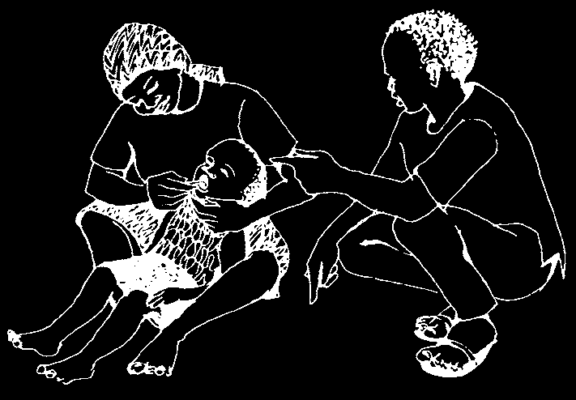
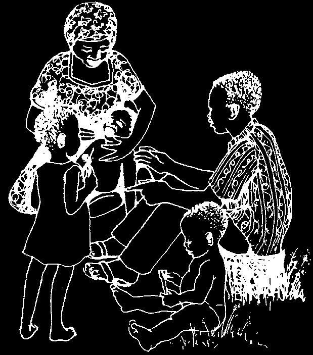
5. Teach Something People Can Do Right Away
It is good to tell a mother to keep her child’s teeth clean, but it is better to show her how to do it. She will remember how if she actually watches you clean her child’s teeth.
An even better way for a mother to learn is to let her clean her child’s teeth while you watch. A person discovers something for herself when she does it herself.
Pick out a child and clean his teeth yourself.
Let his mother watch.
Use a soft brush (or for a baby, a clean cloth).
Gently but quickly brush or wipe his teeth. Do the best you can even if he cries.
If mothers make this into a habit, the child will expect to have his teeth cleaned and will soon cooperate—just the way he does to bathe or to have lice removed from his hair.
Now let each mother clean her
Ask her to do the same at home own child’s teeth. Teach her to each day. At the next clinic, look clean on top and on both sides at the children’s teeth and see of every tooth.
how well the mothers are doing.
Give further help when needed.
Always praise and encourage those who are doing well.
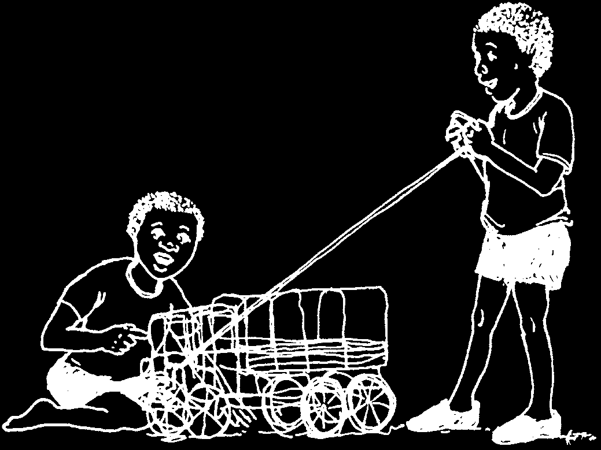
Teaching Children
CHAPTER 3
at School
Children want to learn. The want to know more about things that are real to them. Family, friends, and teachers are all important sources of new knowledge for children.
It is important to keep alive their desire to learn, so that children can continue to ask questions, discover, and learn more for themselves.
When children are interested in something, they will work hard to learn all they can about it.
If you relate your teaching to children’s interests and needs, they will learn more easily. New information added to what they already know helps children to understand your lesson better. As a result, they will want to learn more because the information is both interesting and worthwhile.
Teaching about teeth and gums is important. You must do it well if you want children to pay attention, learn, and finally act to take care of their own teeth and gums.
As school children continue to learn, they can share their new ideas and information at home with brothers, sisters, mothers, fathers, and grandparents. In this way, the circle of teaching and learning described on page 12 comes back into the family and is complete.
This chapter has two parts. Part 1 gives seven guidelines for assuring that learning takes place. Part 2 suggests ways to have fun while learning—with stories, games, and pictures. In Chapter 4 there are nine questions on teeth and gums with specific activities for learning how to answer them.


PART 1:
TEACHING SO THAT LEARNING CAN TAKE PLACE
More children than ever before are having problems with their teeth and their gums.
A tooth that hurts or gums that are sore can affect a student’s ability to pay attention in school and learn.
Treating the problem makes the child feel better, and that is important. It is equally important to prevent the same problem from returning later.
Working together, teachers and school children can do much to prevent both tooth decay and gum disease.
Keeping the mouth healthy involves learning about eating good food and keeping teeth clean. Just giving information is not enough, though. To truly learn, children need a chance to find out things for themselves.
Forcing a person simply to accept what you say does not work very well.
A student learns not to question. What you teach may have no relation to his own experiences and needs.
As a result, he may end up not doing what you teach—not eating good foods, and not cleaning his teeth.
Learning happens when a student with a question or an idea is able to discover more about it himself.
It also happens when he has a chance to do whatever is necessary to take better care of himself and his family.
He can learn by doing. Give him a chance to eat good food and clean his teeth at school.
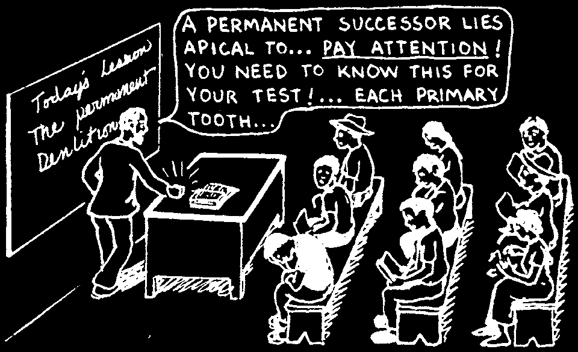
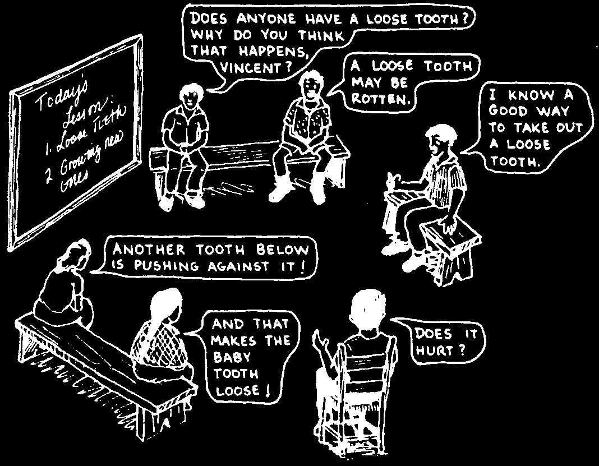
Learning about teeth and gums can be fun. When the teaching is real and practical, students love to learn. Here are some ideas:
Teaching so that learning can take place
1. Teach and learn together with your school children.
2. Start with what the students already know.
3. Let students see and then do.
4. Let children help each other.
5. Teach about teeth and gums together with other subjects.
6. Be a good example.
7. Make the community part of your classroom.
1. Teach and Learn Together with School Children
Share ideas instead of always giving information.
Children learn more when they are involved.
A lecture transfers your own notes to the children’s notebooks without ever passing through their minds.
A discussion draws out information and opinions.
It helps you to learn more about the school children, what they already know and believe to be true.
But it also allows you to introduce important information that is related to the discussion.

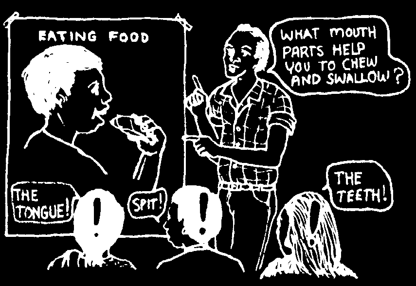
2. Start with What the Students Already Know
To have meaning, learning should be a part of daily living. Talk with your students. Find out what they know about teeth and gums, and what questions they might have.
Add information by building upon what a person already knows.
Do not use big words. Scientific names and textbook explanations are confusing, and you usually do not need them. Talk about teeth and gums using words that a school child can understand and use later at home.
This way makes students feel stupid.
This way lets the students feel good, because it makes sense and they know something about it.
When you can understand new information, you gain confidence and you look forward to learning more.

3. Let Students See and Do
Students learn best when they can take part and find out for themselves about something new.
A lecture about brushing teeth is usually not interesting at all.
Learning is more interesting when students can see how to make a brush and how to clean teeth properly.
If students can actually make their own brushes and clean their own teeth, it is not only interesting but fun.
A student who takes part will not forget. What he learns by doing becomes part of himself.
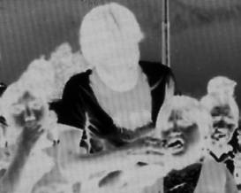
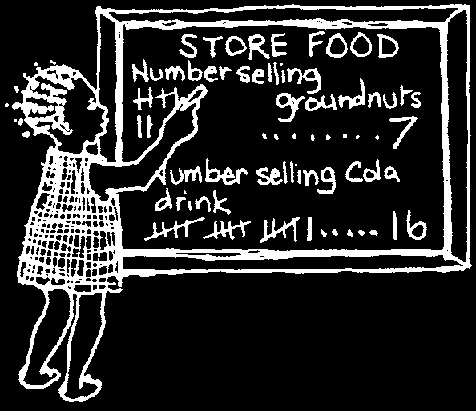
4. Let Children Help Each Other*
In most families, older children have important work to do—taking care of their younger brothers and sisters. These older children can do much to teach the younger ones about care of teeth and gums. For example:
• When they feed their younger brothers and sisters they can encourage them to eat good food, like fruit instead of candy.
• They can do a play or puppet show about care of teeth and gums.
• They can check the teeth and gums of the younger children and
'score’ them on how healthy they are (see p. 60).
Here a group of school children
• Best of all, they can actually clean in Ajoya, Mexico is putting a high-fluoride paste (see p. 205)
the teeth of the younger ones, on the teeth of the younger and show them how to clean their children.
own teeth when they are able.
5. Teach About Teeth and Gums
Together with Other Subjects
Teeth and gums are part of a bigger health picture. Teach about them in class at the came time.
Eating good food can be part of a discussion on nutrition, teeth, farming methods, and the politics of who owns the lands.
Cleaning the teeth can be part of a discussion on hygiene, clean water, and traditions and customs.
A good way for school children to learn about using numbers is to do a survey in the community.
The results will tell the children something about health problems in their community. For an example of a survey of health problems, see page
3-14 of Helping Health Workers Learn.
*For more ideas on how school children can help each other, write to CHILD-to-child Trust,
Institute of Education, 20 Bedford Way, London, WC1H 0AL, UK. Tel: 44-207-612-6649.
Fax: 44-207-612-6645. E-mail: ccenquiries@ioe.ac.uk. Website: www.child-to-child.org


6. Be a Good Example
Children watch people around them. They pay attention to what you do, as well as to what you say.
Be a good example.
Take care to do yourself what you are teaching to your students.
Your family can be a good example for others.
• Clean your teeth carefully every day. Also, help your children keep their teeth clean.
• Make a garden near your house and plant a variety of vegetables and fruits in it.
• Buy only good, healthy food from the store. Do not buy sweet foods and drinks for yourself or your children.
7. Make the Community Part of Your Classroom
A child’s home and his community are really more important to him than his school. Learning will be more interesting for a student if the day-to-day needs of his home and his community are part of school discussion.
Let students find out more about problems at home and in their community.
For example:
• How many small children have cavities or red, bleeding gums?
• How many stores have mostly sweet snack foods on their shelves?
• Why do the people not grow and eat more local food?
Back in the classroom, students can record what they find. Ask the children to think of ways to solve the problems they found. If they can think of a program to help solve a health problem, let them go back into their community and try it.

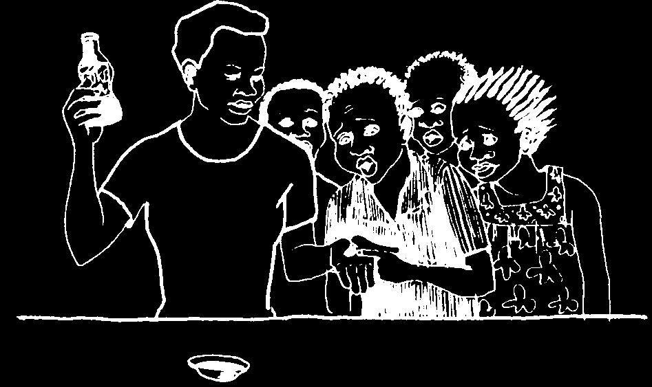
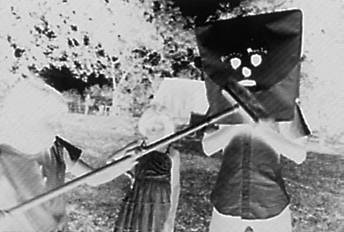
PART 2
MAKING LEARNING EXCITING, VISUAL, AND FUN
Here are some ideas to help students see what you are teaching, and to have fun while they learn. Students can also show these things to others.
Teaching others is an excellent way to learn.
Tell a story about food or teeth. For example, tell a story about why a wild cat’s teeth are different in shape from a goat’s teeth (page 40). Stories are an excellent way to learn, both for the storyteller and for those listening.
Leave time at the end to discuss the story and to introduce new information.
See the example of storytelling on pages 15 to 16.
Make up a play or drama about good food or clean teeth. Show it later to the community.
The play should be about looking for an answer to a real problem. If the children invent the play, they will have to think, plan, and solve problems. A play also helps children learn how to talk with and teach others.
These school children in Nicaragua are doing a play about cavities. On the left, germs and sweet food are combining and trying to make a hole in the 'tooth’. But a giant toothbrush (right) beats them away!
Do a demonstration using local resources.
Try, for example, the
'tooth in the Coca-Cola’
test on page 48.
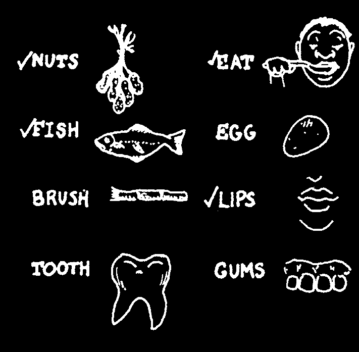
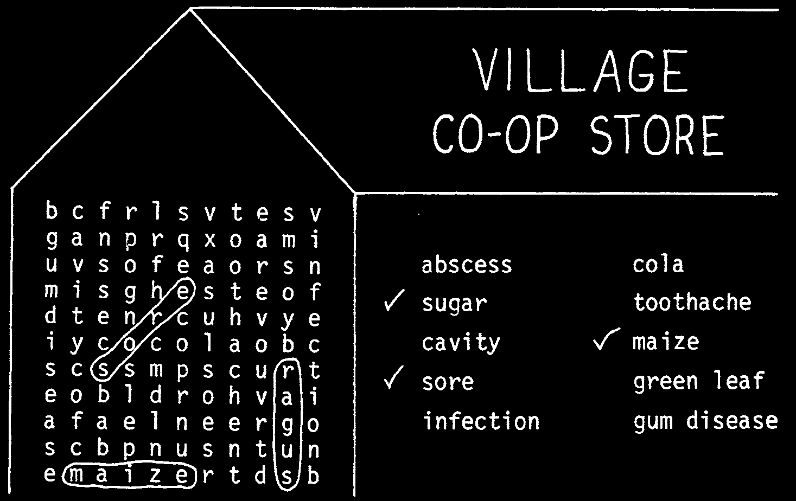
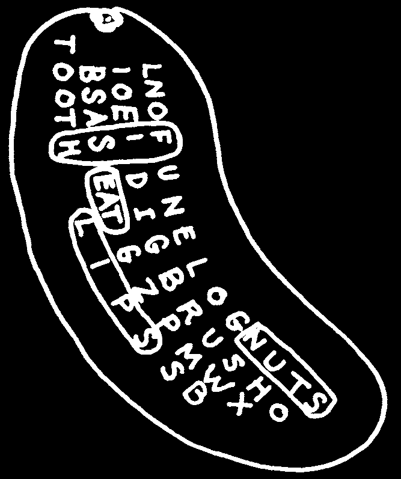
Puzzles can help school children discover answers for themselves. You can make your own. The best puzzles are with words that the students know and can use easily.
EXAMPLE (for younger children just learning to read) Try to find these words:
As you find each word, put a beside it.
An older child can try to find important words that are more difficult.
Spell some of the words diagonally (slanted). It will make the puzzle harder.
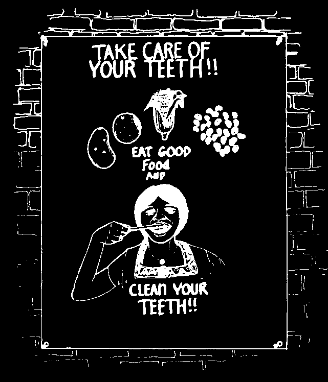
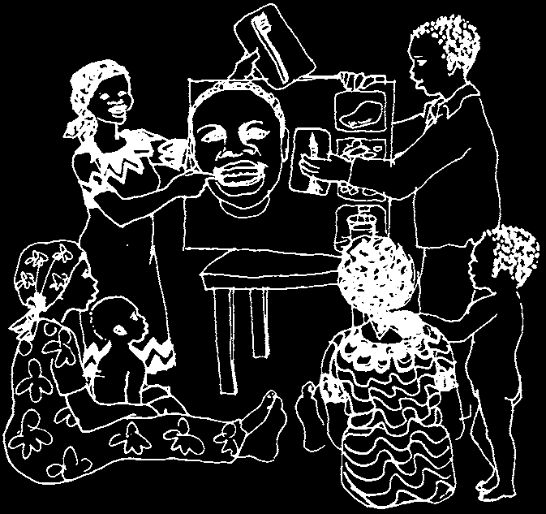
You can use pictures on posters, flip charts, and on flannel-boards.
Pictures that school children draw themselves are best. They learn simply by drawing them. Also, school children will draw local people and local experiences, and the people will understand their pictures better than the ones sent from a central office far away.
Photographs of local people and events are also good. If there is a photography club in a local secondary school, have them take some pictures for you. They may even print the photographs larger so that you can use them as posters.
Ask the children to make pictures big enough so that a person can stand far away and see them easily.
Let each child carry her poster home to show her family and friends.
Hang up other posters in the store, church, or other places where people will see them.
Pictures can be made to stick to cloth and then used to tell a story. Cover a board with a piece of flannel cloth or a soft blanket, to make a flannel-board.*
Mix some flour and water to make glue. Then glue a strip of sandpaper to the back of each picture. The sandpaper sticks to the cloth and lets you place the picture where you want on the cloth.
Let the child use her pictures and cloth outside of the school, to show her story to family and friends.
*For more ideas on flannel-boards, see pages 11-15 to 11-19 of Helping Health Workers
Learn.


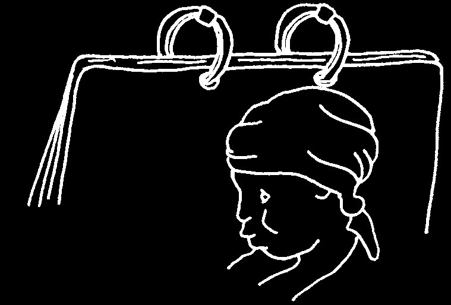

Flip charts are excellent for telling a story with pictures. Often, people can guess what the story is about just from the pictures. When showing the pictures on a flip chart, ask as many questions as you can, to get the people to tell you the story.
Here a health worker from
Mozambique is holding a flip chart with pictures about care of teeth and gums. There are no words with the pictures.
But he can read a short message written on the back of the page before. There are also examples of questions to ask.
This way, anyone who can read can tell the
'flip chart story’
to others.
This is part of a flip chart presentation on
There is also a mothers’ and children’s health. Notice small copy of the the rings at the top that hold the flip big picture on the chart together. They are made from old back of the page electrical cords.
before.
Find a way to attach the sheets of heavy paper. Here are two ways:
with 2 thin pieces of wood with metal or wire rings


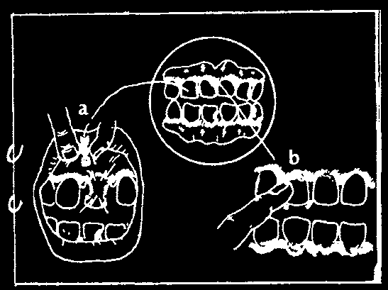
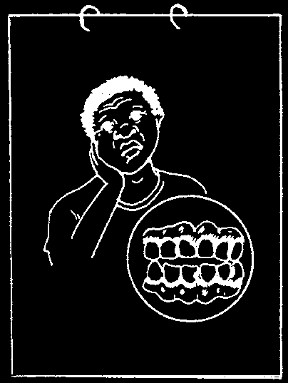
FLIP CHARTS—AN EXAMPLE
Dental workers in Mozambique created this flip chart presentation for teaching in schools.
1) Here is a healthy, happy schoolboy. In the circle
you see the inside of his mouth. His teeth are white and clean. Look at his gums. What color are they? Are they tight or loose? Between the teeth, are the gums pointed or flat?
2) This is an unhappy, sick boy. What color are
his teeth? Not only are they yellow, there are black spots. These are cavities.
What color are his gums? Are they pointed?
Loose, red, swollen gums are signs of gum disease.
Both cavities and gum disease can be treated.
3) What happens if tooth and gum
problems are not treated?
a) The black hole grows bigger on the tooth and a sore forms on the gums near the root. The tooth hurts whenever you touch it.
b) The red, loose gums pull away from the tooth. Infection gets to the bone and eats it. The tooth loses the bone and the gum around it.
The first problem is a tooth abscess. The second is advanced gum disease. If either of these things happens, the tooth must be taken out.
4) Why does the boy have cavities and gum disease?
There are 2 reasons.
a) He eats too many sweet foods.
What foods do you see here?
What other foods hurt the teeth?
b) He does not clean his teeth regularly.
The germs in his mouth eat sugar from his food and make acid. Acid causes both cavities and gum disease.
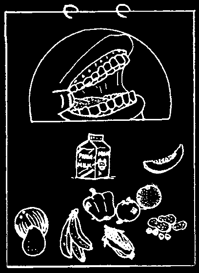
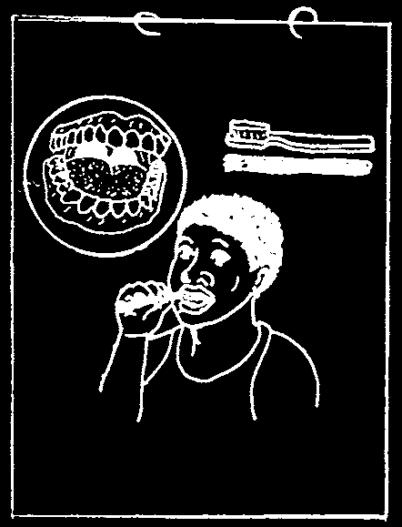

5) What foods can the boy eat to keep his teeth and gums healthy? What do you see in this picture?
Natural foods, with no sugar added, are the best.
The foods you grow yourself and local foods from the market are better than sweet foods from the store.
6) How can we clean our teeth?
Carefully is the important word to remember. Clean your teeth at least once a day, carefully brushing every part of every tooth—outside, inside, and top. Be very careful to push your brush between your teeth. That is where the germs and food collect to make acid.
If you do not have a toothbrush, you can make one from a stick. Toothpaste is not necessary.
Clean water is enough.
Chapter 12 in Helping Heath Workers Learn is full of ideas on how to make and use pictures effectively. Once you have a good original, you do not need to be an artist to make a good copy. Here is an easy method that can involve every student.
Place thin see-through paper over the original drawing. Carefully trace a copy.
Now place the copy on a new sheet of heavy paper. Pressing firmly with a pencil, retrace all of the fines on the thin copy paper.
Remove the tracing paper. Pressure from the pencil has made fines on the poster paper. Redraw them with a pencil so they stand out clearly.
Your copy is now ready for coloring.
And you can use your copy paper again to make another copy.
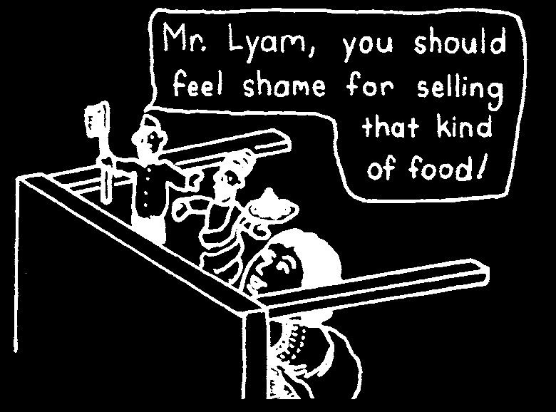

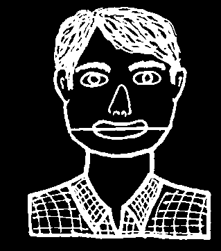